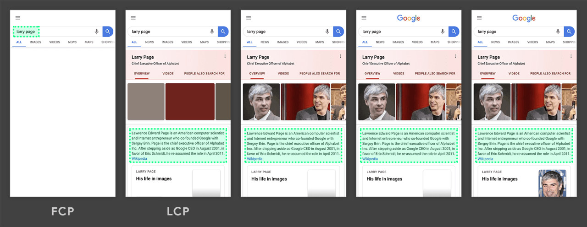

# 性能优化——专业术语
# 前言
本人平时学习及收集内容，欢迎参入一起讨论。
# 内容
- 性能报告指标
# 一、性能报告指标
页面从加载到展示的过程图：

- 首次绘制（First Paint）
- 首次内容绘制（First Contentful Pain）
- 最大内容绘制（Largest Contentful Paint）
- 首次有效绘制（First MeaningFull Paint）
- 首屏时间（Speed Index）
- 首次 CPU 空闲时间（First CPU Ide）
- 完全可以交互时间（Time to Interactive）
- 最大估计输入延时（Max Potential First Input Delay）
- 首次输入延迟（First Input Delay）
# 1.1 首次绘制（FP）
**FP（全称“First Point”，翻译）**是时间线上的第一个“时间点”，它代表浏览器第一次向屏幕传输像素的时间，也就是页面在屏幕上首次发生视觉变化的时间。
注意：FP 不包含默认背景绘制，但包含非默认的背景绘制。
# 1.2 首次内容绘制（First Contentful Pain）
FCP（全称“First Contentful Paint”，翻译为“首次内容绘制”），思义，它代表浏览器第一次向屏幕绘制**“内容”**。
注意：只有首次绘制文本、图片（包含背景图）、非白色的
canvas或 SVG 时才算作 FCP。
FP 与 FCP 这两个指标之间的主要区别是：FP 是当浏览器开始绘制内容到屏幕上的时候，只要在视觉上开始发生变化，无论是什么内容触发的视觉变化，在这一刻，这个时间点，叫做 FP。
相比之下，FCP 指的是浏览器首次绘制来 DOM 的内容。例如：文本，图片，SVG，canvas 元素等，这个时间点叫 FCP
FP 和 FCP 可能是相同的时间，也可能是先 FP 后 FCP。
# 1.3 最大内容绘制（Largest Contentful Paint）
**LCP（全称“Largest Contentful Paint”）**表示可视区“内容”最大的可见元素开始出现在屏幕上的时间点。

了解和测量网站真实的性能其实非常困难，像load和DOMContentLoaded不会告诉我们用户什么时候可以在屏幕上看到内容。而FP和FCP又只能捕获整个渲染过程的最开始，FMP更好一点，但是它的算法比较复杂，而且前面说了，有时候不准。
根据 W3C Web 性能工作组的讨论和 Google 的研究，发现测量页面主要内容的可见时间有一种更精准且简单的方法是查看什么时候渲染最大元素。
以上图为例，绿色方块的区域是内容最大的元素，所以在这个例子中，LCP 等于这个元素开始渲染的时间。
现在我们了解了 FP、FCP、FMP 以及 LCP 这几个术语，FP 与 FCP 可以让我们知道让我们知道，我们的产品何时开始渲染；而 FMP 与 LCP 可以让我们了解我们的产品何时“有用”，站在用户的角度，FMP 与 LCP 可以表示我们的产品需要多久才能体现价值。
# 1.4 首次有效绘制（FMP）
**FMP（全称“First Meaningful Paint”，翻译为“首次有效绘制”）**表示页面的“主要内容”开始出现在屏幕上的时间点。它是我们测量用户加载体验的主要指标。
FMP 本质上是通过一个算法来猜测某个时间点可能是 FMP，所以有时候不准。
图 3 给出了 FP、FCP、FMP 之间的比较。

# 1.5 首屏时间
首屏时间，它表示填满首屏页面所消耗的时间，首屏时间的值越大，那么加载速度越慢
# 1.6 首次 CPU 空闲时间（First CPU Idie）
首次 CPU 空闲时间（First CPU Idle），也称为 First interacitve，它表示页面达到最小化可交互的时间，也就是说并不需要等到页面上的所有元素都可以交互，只要可以对大部分用户输入做出响应即可。要缩短首次 CPU 空闲时长，我们就需要尽可能快加载完关键资源，尽可能快地渲染出来首屏内容。
# 1.7 完全可交时间
完全可交互时间（Time to Interactive），简称 TTI，它表示页面中所有元素都达到了可交互的时长。简单理解就是这个时候页面的内容已经完全显示出来了，所有的 JavaScript 事件已经注册完成，页面能够对用户的交互做出快速响应，通常满足响应速度在 50 毫秒以内。如果要解决 TTI 时间过久的总是，我们可以推迟执行一些和生成页面无关的 JavaScript 工作。
# 1.8 最大估计输入延时（Max Potential First Input Delay）
最大估计输入延时（Max Potential First Input Delay），这个指标是估计你的 Web 页面在加载最繁忙的阶段，窗口中响应用户输入所需的时间，为了改善该指标，我们可以使用 WebWorker 来执行一些计算，从而释放主线程。另一个有用的措施是重构 CSS 选择器，以确保它们执行较少的计算。
# 1.9 首次输入延迟（First Input Delay）
首次输入延迟（First Input Delay），FID 指的是用户首次与产品进行交互时，我们产品可以在多长时间给出反馈。TTI 可以告诉我们网页什么时候可以开始流畅地响应用户的交互，但是如果用户在 TTI 的时间内，没有与网页产生交互，那么 TTI 其实是影响不到用户的，TTI 是不需要用户参与的指标，但如果我们真的想知道 TTI 对用户的影响，我们需要 FID。不同的用户可能会在 TTI 之前开始与网页产生交互，也可能在 TTI 之后才与网页产生交互。所以对于不同的用户它的 FID 是不同的。如果在 TTI 之前用户就已经与网页产生了交互，那么它的 FID 时间就比较长，而如果在 TTI 之后才第一次与网页产生交互，那么他的 FID 时间就短。
捕获 FID 比较简单，我们只需要在网页的 head 标签里注册一个事件（click、mousedown、keydown、touchstart、pointerdown），然后在事件响应函数中使用当前时间减去事件对象被创建的时间即可。
performance.now() - event.timeStamp
# 参考资料
# 联系作者
平凡世界，贵在坚持。

← 性能优化——网络优化 性能优化——工具使用 →